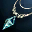
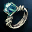
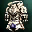
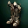
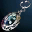
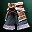
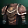
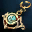
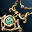
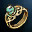

Lineage IIInterludeEnchant
Заточка Lineage 2 Interlude — шансы +3…+16
L2OFF retail · 150 предметов D–S · обычный и благословенный свиток
Заточка в Interlude зависит от типа предмета, а не от грейда. Физическое оружие точится с шансом 70% до +15 и 35% на +16, магическое — 40% и 20%, броня и бижутерия — 66,67% на каждом шаге. Safe-зона: +3, для цельного доспеха +4. Максимум — +16.
| Тип | +4…+15 | +16 | Провал обычного | Провал благословенного |
|---|---|---|---|---|
| Физическое оружие | 70% | 35% | разрушение | сброс на +0 |
| Магическое оружие | 40% | 20% | разрушение | сброс на +0 |
| Броня и бижутерия | 66,67% | 66,67% | разрушение | сброс на +0 |
| Цельный доспех | 66,67% с +5 | 66,67% | разрушение | сброс на +0 |
150предметов D–S
75оружия
19магического оружия
75брони и бижутерии
Заточка по грейдам
D–SВсе предметы для заточки
150
Aquastone Necklace · C
Aquastone Ring · C
Full Plate Armor · C
Full Plate Boots · C
Moonstone Earring · C
Brigandine Gaiters · D
Brigandine Tunic · D
Elven Earring · D
Elven Necklace · D
Elven Ring · DЧастые вопросы
FAQКакие шансы заточки в Lineage 2 Interlude?
Физическое оружие — 70% до +15 и 35% на +16, магическое — 40% и 20%, броня и бижутерия — 66,67% на каждом шаге.
До какого уровня безопасно точить?
До +3, для цельного доспеха — до +4. Начиная со следующего шага возможен провал.
Что делает благословенный свиток?
При провале не разрушает предмет, а сбрасывает заточку на +0. Шанс успеха такой же, как у обычного.
Какой максимальный уровень заточки?
В этом симуляторе — +16, как в L2OFF Interlude retail.
Открыть симулятор заточки
Ручная заточка и авто до +4/+7/+10/+16.